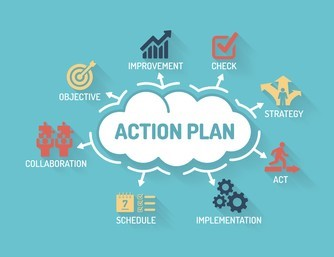
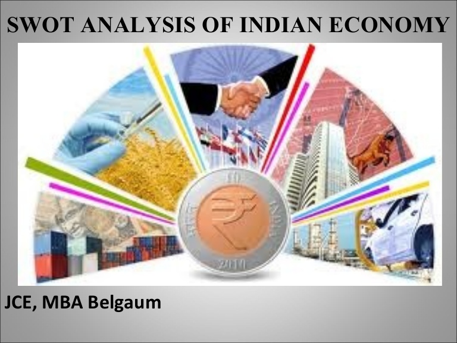
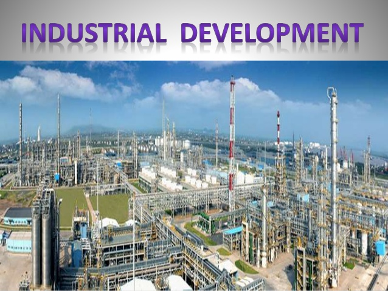
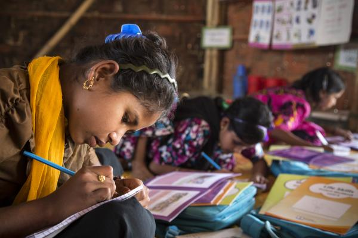

Our youth are frustrated due to the sharp fall in employment opportunities during the last few years. Modi had promised creation of 2 crore new jobs annually, i.e., 10 crores by now. Reality is that the unemployment rate rose to the highest levels in 45 years at 6.1 per cent (NSSO). Unemployment rate in February 2019 increased to 7.1 per cent from 5.9 per cent in 2018 (Centre for Monitoring Indian Economy). Situation in rural India is worse. NSSO reports a 3.2 crore job loss of casual labourers from 2011-12 to 2017-18 affecting over 1.5 crore families dependant on incomes from casual labour and agriculture.
Growing Attacks on SCs and STs
There has been a steady increase in crimes against Scheduled Castes and Scheduled Tribes, especially in Gujarat and the erstwhile BJP ruled states of Madhya Pradesh and Rajasthan.
Large sections of the adivasis have been deprived of their land pattas due to them under the Forest Rights Act.
An illustration of such increasing attacks is in the state of Gujarat with its much advertised ‘Gujarat Model’, where crimes against SCs and STs increased by 32 per cent and 55 per cent respectively during the last five years (Gujarat Assembly records).
Increasing Violence Against Women
Women have been subjected to increased violence. The year 2016 reported a big increase in crimes against women – four rapes on an average every hour. Since then the Government has stopped publishing statistics by the National Crime Records Bureau in this regard.
The overall dehumanization of our society reflected in growing atrocities against women, particularly the girl child, with gruesome incidents of gangrape and murders of young girls.
Enriching the Rich and Impoverishing the Poor
During these five years the share of the total wealth accruing to the top one per cent of our population increased from 49 per cent in 2014 to 73 per cent in 2018.
Sharp decline in the working conditions for the working class and employees is accompanied by unbearable hike in the price of petroleum products with the government refusing to reduce its taxes and duties.

The lowest growth rate of GDP during these five years ─ from 8.2 per cent in 2013-14 to 7 per cent, in the first three quarters of 2018-19 even according to the motivated data series introduced by this government. According to the earlier data series this stands at mere 4.7 per cent.
In the last quarter GDP growth rate fell further to 6.6 per cent indicating that the economy is sliding into a recession. So much for Modi’s claims of India being the “fastest growing economy” in the world!
GST collections, despite all the tall claims, have shown a steady decline from 7.8 per cent in 2017-18 to 5.8 per cent in 2018-19. This reflects a massive slowdown in the economy.
Demonetisation and GST were a double whammy attack undermining the country’s economic fundamentals. Pre-demonetization Global GDP was 2.6 per cent and grew post demonetization to 3.1 per cent. In contrast, post demonetization India’s GDP growth fell from 7.8 per cent to 6.8 per cent.
Destruction of people’s livelihood has led to a drastic fall in levels of domestic demand crippling manufacturing and industrial growth. As a consequence, the country’s leading automobile manufacturer, Maruti Suzuki has announced a production cut of 27 per cent citing the fall in demand. The eight core infrastructure industries growth saw a decline of 2.9 per cent between February 2014 and January 2019. The index of Industrial Production (IIP) registered an abysmal low of -0.3 per cent in November 2018 compared to an average growth of 5.7 per cent in the preceding seven months.
Depreciation of the rupee to its historically lowest levels¬ ─ the value of the rupee to a US dollar was 63.19 in 2014. This shot up to 71.76 in 2019.
Drastic fall in India’s export earnings ─ between February 2014 and January 2019 India’s trade balance declined by a whopping 29.8 per cent.
Growing current account deficit i.e. gap between India’s import and export values has been registered in these five years. The Current Account Deficit increased from 1.1 per cent of the GDP in 2017-18 to 2.9 per cent in 2018-19. In dollar terms this translates to a deficit growth from 6.1 billion US dollars to 19.1 billion.
Agricultural growth is at a record low during these years. Agricultural growth rate fell from 5.1 percent to 2.7 per cent and further to 1.7 per cent between February 2015 and February 2019 (CSO). The fourth successive negative growth rate registered in the last four quarters.
The CPI(M) stands for the separation of religion and politics and for the passage and implementation of all legislative measures necessary to make this effective.Communal violence should be dealt with firmly. Secular values should be promoted by the State in all spheres. The CPI(M) will work towards:
• Removal of RSS personnel appointed in key positions by the BJP government.
• Enacting a comprehensive law against communal violence; ensuring speedy justice and adequate compensation and State support to the victims of communal violence without infringing on the federal framework.
• Immediate banning of all illegal private armies and vigilante groups like the various ‘senas’ that are attacking dalits and minorities in the name of cow protection and spreading communal hatred. Enactment of appropriate legal measures for reining in and taking action against organisations and institutions involved in spreading communal hate and attacking minorities; enact a law against lynching.
• Ensuring exemplary punishment for perpetrators of communal violence regardless of their public or official position.
• Protecting the rights of minorities to lead a life of equality and dignity without any fear or discrimination.
• Purging all school textbooks of content reflecting communal bias and prejudices.
• Amend the Constitution to make parliamentary approval mandatory for any international treaty.
• Repeal the colonial era Sedition Law, Sec. 124A of IPC.
• Repeal the Armed Forces Special Powers Act and replace it with a suitable law which provides a legal framework for the operation of the armed forces without the draconian provisions.
• Repeal/amend the National Security Act and the Unlawful Activities Prevention Act.
• Repeal Section 499 of IPC relating to defamation.
• Ratify the Convention against Torture and Other Cruel, Inhuman or Degrading Treatment or Punishment.
• Amend the Indian Penal Code and other statutes to remove the death penalty from the statutes.
• Enact the Citizens Charter and Grievance Redressal Act to provide a legal framework for ensuring time bound delivery of services and grievance redressal.
• Enact legislation to ensure mandatory social auditing and accountability to evaluate the impact and performance of public programmes must be extended to all areas of governance and empower every citizen to hold government accountable to its mandate.
• Scrapping of the use of Aadhaar and biometrics for all social welfare measures.
ALTERNATIVE ECONOMIC POLICIES
In order to maintain predominant State control over finance and revival of development finance, the CPI(M) stands for:
• Reversing moves towards Full Capital Account Convertibility; re-imposing controls on the outflow and inflow of finance capital.
• Prohibiting Participatory Notes used by the Foreign Institutional Investors (FIIs); discourage speculative finance.
• Safeguarding the autonomy of the RBI and for the modernisation of the financial regulatory system. RBI’s regulatory role over banks to be strengthened. RBI to come up with clear guidelines for banks to stop charging customers for each and every banking service and take action against culprits who have caused loss to the banks.
• Immediately halting the process of issuing fresh licenses for banks in the private sector and review of the Banking Regulation (Amendment) Act 2012.
• Ensure that banks retain their independent identity and review all the steps taken for the merger of public sector banks and putting a stop to the closure of bank branches.
• Preventing takeover of Indian banks by foreign banks.
• Strict measures to ensure that big business houses are prevented from transferring the risks of their projects to banks and strict action against defaulters and strengthen the banking regulations for the collection of Non Performing Assets. Publication of defaulter lists, transparent recovery measures, assets recovery procedures including attaching of properties and sale, along with a moratorium on willful defaulters, companies and their offshoots, from accessing any fresh loan or restructuring. Strict action and criminal procedure against willful defaulters.
• Prohibit use of tax havens and illegal flows of capital; plug loopholes in double taxation avoidance agreements.
• Strengthen small savings with proper regulation; strengthen legislation on chit funds to ensure protection of deposits of common people; confiscate the properties of ponzi scheme owners and arrange payments to the affected depositors.
• Withdrawing the proposal to open finance sector for the entry of FDI.
• Ensure the FDI cap in the insurance sector of 26 per cent.
The CPI(M) stands for:
• Reversal of privatisation of defence production sector; immediately taking measures to rescind private participation in defence production; stopping FDI inflows in defence sector; strengthening and expanding State owned defence industry to achieve self reliance in defence.
• Increasing public investment in infrastructure; adequate Plan outlays for power, communications, railways, roads, ports and airports.
• No FDI in railways; revoke the decision to privatise Railways, Defence, Port and Dock, Banks, Insurance, Coal, water resources etc.
• Reviewing energy and telecom policies in tune with the interests of self-reliant national development; using the domestic market to develop power and telecom equipment manufacturing in the country.
• Reversing the trend towards private power producers; privatising distribution companies; stop the franchising of towns to private players.
• Changing telecom policies to promote telecom penetration and connectivity in rural areas; strengthening the public sector telecom companies BSNL and MTNL and allocating necessary spectrum for them to upgrade their services.
• Increasing broadband penetration and universal affordable access to internet.
• Reviewing of privatisation of infrastructure through the PPP route.
• Rescind the orders for the private maintenance and upgradation of airports. No further PPPs in domestic airports already modernised by Airport Authority of India.
• Placing emphasis on rural infrastructure; increased outlays on rural roads, electrification etc.
The CPI(M) stands for:
• Strengthening and expansion of the public sector in the core and strategic areas by injecting fresh capital and technology; promoting autonomy and efficiency in the public sector.
• Manufacturing sector growth to be given priority through a long term industrial policy that strategises investment and creates incentives for employment generation.
• Complete halt to disinvestment and privatisation of profit-making and potentially viable PSUs; give revival package to the important PSUs in the public interest.
• Revival and opening of sick jute mills and tea plantations.
• Encouraging small and medium enterprises in labour intensive sectors with adequate incentives, infrastructure support and sufficient credit from banks; increasing financial allocation to Cluster Development Projects (CDPs).
• Protection of domestic industry from indiscriminate lowering of import duties and takeover of existing Indian companies by foreign companies; encouraging the private sector to invest in manufacturing and services sectors; providing incentives to the private sector linked to job creation and R&D efforts.
• Prohibiting FDI in retail trade; regulating e-commerce, domestic corporate retailers through a licensing policy.
• Amending SEZ Act and Rules to do away with myriad tax concessions and regulate land-use; ensuring strict implementation of labour laws in all SEZs.
• Halting further liberalization and privatization of the mineral sector; return of all unexplored coal blocks allotted to private sector for captive use to Coal India Ltd.
• Making Coal India Ltd. a unitary company and only agency for mining coal and supplying to industries and the customers; immediately revoke decision allowing commercial mining of coal mines.
• Protecting traditional industries such as textiles, carpets, handicrafts, leather, handloom, coir, etc.
• Providing inputs at controlled rates to workers in these sectors; improving design, technology and skills, and extending adequate facilities and extension services for marketing etc.

In order to reverse the agrarian crisis, make agriculture remunerative and ensure enhanced incomes of the peasantry, the CPI(M) proposes steps to:
• Legislate the farmers’ right to sell their produce at an MSP which will be at least, one and a half times of the total cost of inputs.
• Effect a substantial increase in public expenditure on the rural sector to enhance purchasing power of the rural poor and increase productivity in agriculture.
• Increase public investment and expand public institutions for agricultural research and extension services.
• Re-impose trade restrictions to prevent both dumping and excessive exports that jeopardize national food security.
• Revive commodity boards to set floor prices for commercial crops.
• Provide cheap institutional credit to the agricultural sector at a minimal rate of interest.
• Expand public investment in power supply to rural areas and stop privatization of electricity; ensure uninterrupted supply of power to agriculture; expand irrigation facilities.
• Provide basic amenities and improvements in rural infrastructure.
• Scrap the Nutrient Based Subsidy regime in fertilisers; repeal the Seed Act and introduce farmer-friendly seed legislation.
• Repeal the model APMC Act which advocates contract farming; bring farmer-friendly reforms in agricultural markets.
• Shun unequal Foreign Trade Agreements and all trade related negotiations based on the principle of national economic sovereignty, and subject it to Parliamentary scrutiny.
• Reverse changes in the intellectual property regime that favour big business; ensure strict regulation of private agricultural research with regard to protection of biodiversity.
• Promote and strengthen co-operatives for agricultural production, water use, input purchase, crop storage, output marketing and dairy.
The CPI(M) shall:
• Amend the Right to Fair Compensation and Transparency in Land Acquisition, Rehabilitation and Resettlement Act 2013 to ensure its universal application on all laws requiring land acquisition, rigorous definition of public purpose, full and prior informed consent from all affected persons, binding social impact assessment and compensation and R&R in such manner as to ensure a far better quality of life and share in enhanced land value.
• Enact suitable policies to adequately compensate all dispossessed and displaced farmers.
• Reverse the current thrust to dilute land-ceiling laws; speedy and comprehensive steps for implementing land reforms.
• Prevent the encroachment and takeover of common lands like pastures, community forests, scrublands, etc.
• Protect all government and public sector land held in public trust from transfer by lease, sale, diversion or any other manner to the private sector.
• Takeover and distribution of all surplus land above ceiling and handing over of cultivable wasteland to landless and poor peasant households free of cost, with priority to SCs and STs; joint pattas to be distributed including equal right of women to the land.
• Provide house sites and homestead land to all sections of the rural and urban landless.
• Record tenancy and protect the rights of tenants in all states where this has not been done.
• Prohibit land grab for real estate speculation.
To work towards a hunger free India, the CPI(M) will:
• Seek elimination of the present targeted system and establishment of a reformed and strengthened universal public distribution excluding income-tax payees. No linkage with Aadhaar.
• Provision of a minimum of 35 kgs of foodgrains for a family or 7 kgs of foodgrains per individual, whichever amount is higher, at a maximum price of Rs. 2 per kg of foodgrains.
• Support initiatives of state Governments in this sphere.
• Along with foodgrains, the PDS will supply essential commodities such as pulses, edible oil, sugar, kerosene at controlled prices.
• The food supplies through ICDS and Mid-Day Meal Schemes will get higher allocations to ensure hot cooked nutritious meals and be brought under the Food Security law as a legal right.
• Implementation of Food Security Act allowance of Rs. 6000 for pregnant women without conditionalities.
• Special measures like free kitchens for vulnerable sections of the population such as migrant workers, destitutes, widows, disabled persons.
• Strengthen the rationing system in remote and hilly areas to ensure that adivasis and other vulnerable sections in those areas have easy access to food security.
• Twelve LPG cylinders per year to be provided at subsidized rate with no Aadhaar linkage.
• No cash transfers in lieu of foodgrains.
The CPI(M) proposes a series of measures to control rising prices of essential commodities. These include:
• Reversing the deregulated regime of pricing of petroleum products and establishing an administered price control mechanism.
• Reducing the central excise and customs duties on petroleum products.
• Controlling prices of natural gas and price of subsidized gas cylinders.
• Banning futures trade in agricultural commodities as recommended by the Parliamentary Standing Committee.
• Acting strictly against hoarding and black-marketeering of essential commodities and strengthening provisions of the Essential Commodities Act.
• Strengthening disclosure norms for private stocks of foodgrains held in godowns and warehouses.
• Strengthening PDS and using buffer stocks judiciously as a countervailing measure against rising market prices.
• Controlling export of foodgrains when prices are high and rising
• Ensuring control of the prices of essential medicines.
CPI (M) will work for:
• An independent and non-aligned foreign policy, promoting multi-polarity. Strengthen BRICS, SCO and IBSA. Reactivise SAARC and strengthen ties with the countries in our immediate neighbourhood.
• Strengthening multilateral forums like the UN to deal with all disputes between countries; democratising the Security Council and the UN structure.
• Opposing interventions and regime changes imposed by the United States as is happening in Venezuela and in many countries in Latin America.
• Strengthening relations with West Asia and South East Asia and establishing close ties with the Community of Latin American and Caribbean countries (CELAC).
• Resume dialogue with Pakistan to resolve all outstanding issues including cross-border terrorism; promote people to people relations between India and Pakistan.
• Special efforts to build relations and ties with Bangladesh and settle the Teesta water agreement.
• Address the concerns of Rohingyas who continue to remain as state-less.
• Engage with the Sri Lankan government to devolve powers to the Northern and Eastern region, so that the Tamil-speaking people can have autonomy within a united Sri Lanka. Pursue the efforts for an independent credible inquiry into the atrocities committed in the last phase of the war.
• Reverse the pro-Israeli tilt in foreign policy.
The CPI(M) stands for:
• Revising the various defence agreements, like the LEMOA, COMCASA, entered by the current government with the US; withdraw from the Defence Framework Agreement with the US; stopping further steps to enter into military collaboration agreements with the United States; promoting the policy of no foreign military bases in South Asia.
• Revise the Indo-US nuclear agreement; no import of foreign nuclear reactors; pursue self-reliance in civilian nuclear energy based on domestic uranium and thorium reserves.
• Pursuing universal nuclear disarmament through the UN; providing parliamentary sanction for moratorium on testing; striving for a de-nuclearised environment in South Asia; seeking removal of nuclear weapons from the US military base in Diego Garcia in the Indian Ocean.
• Pursuing policies for de-militarisation of cyber space.
• Protecting Indian Internet and telecommunications networks from cyber attacks and surveillance by building indigenous capability.
• Creating a national security apparatus, which will work within the framework of the parliamentary democratic system.
• Increasing the coordination between various intelligence agencies and ensure proper action on credible intelligence outputs for the protection of people’s lives.
• Achieve self-reliance in defence by expanding, developing and strengthening the state owned defence industry and ensuring full capacity utilization.
• Ensure a system of transparency and accountability in the purchase of defence equipments and armaments. Institute speedy investigation and punishment in corruption scams, like Rafale aircraft deal.
The CPI(M) is committed to:
• A political solution to the Kashmir problem based on maximum autonomy for the state based on the full scope of Article 370 of the Constitution; autonomous set-up to be created with the regions of Jammu, Kashmir and Ladakh being given regional autonomy; oppose all the attempts to remove or review Article 35 (A) of the Constitution.
• Urgently initiating a political process through a dialogue/talks with all concerned parties.
• Strong steps to be taken to prevent excesses by security forces against innocent people; ban use of pellet guns and other lethal weapons on protesters.
• Initiating Confidence Building Measures in Kashmir, by talking to all sections of the society and acting upon their genuine grievances.
• Ensure economic development of the state, focusing particularly on generating employment for the youth and reconstructing the damaged infrastructure.
• Complete withdrawal of AFSPA.
The CPI(M) stands for:
• Ensuring that statutory minimum wage for workers is not less than Rs. 18,000; minimum wage to be linked to the Consumer Price Index; wage fixation to be based on 15th ILC recommendations.
• Periodic wage revision to all Central PSU workers without insisting any affordability condition; immediate resolution of the issues of the central government employees related to the recommendations of the 7th Pay Commission.
• Scrapping all anti-worker and pro-employer amendments to labour laws. Ensuring strictest implementation of all labour laws including the law on interstate migrant workers; strengthening labour departments and enforcement agencies including labour/factory inspectorates with adequate manpower and facilities; filling up vacancies of judges and supporting staff in all industrial tribunals and labour courts.
• Improving the legislation on Unorganized Sector Workers and implementing the recommendations of the Standing Committee on Labour in this regard; special social security measures for migrant workers and plantation workers, amending the law to move away from rigid industrial and occupational classification of Boards with a single window access for all workers; constituting national fund for unorganised workers with adequate budgetary financial allocations; universal coverage of all unorganised workers, irrespective of poverty line stipulations, with minimum social security benefits including old age pension, health including maternity, and child care benefits, accident and life insurance; comprehensive legislation covering social security and working conditions for all workers including agricultural workers.
• Scrapping of the “New Pension Scheme” and the PFRDA Act and putting in place a benefit-defined pension scheme with adequate funding by employers and government for all workers/employees ensuring at least a pension of 50 per cent of last pay drawn with indexation.
• Withdrawing the Motor Vehicle (Amendment) Bill; providing social security to unorganized transport workers.
• Ensuring recognition of trade unions through secret ballot and protection of trade union rights; making recognition of union mandatory by law in all establishments; ratification of ILO Convention No 87 and 98 relation to right to freedom of association and collective bargaining along with the ILO Convention 189 on Domestic Workers.
• Adopting an effective scheme for workers’ participation in management in both public and private sector; strengthen Bipartism and Tripartism; no decision to be taken on any issue related to labour without consensus through discussion with trade unions, ensure regular, meaningful social dialogue with workers representatives.
• Discouraging contractualisation and casualisation of work; stringent implementation of The Contract Labour (Regulation And Abolition) Act; paying equal wages and benefits for contract workers as the regular workers for doing the same and similar job; stop outsourcing and contractorisation of jobs of permanent and perennial nature; immediately revoking ‘Fixed Term Employment’ which is in violation of the spirit of ILO Recommendation 204 which India has ratified; protecting the right of contract workers and workers in the unorganized sector to form unions, have full-fledged membership and voting rights in trade unions and exercise their fundamental right to unionize and strike. Strengthening Workers Welfare boards.
• Ensuring equal remuneration for women workers in all areas of work; adopting social security measures for working women including maternity benefits, pension and health insurance for women workers in the unorganized sector including home based workers.
• Strict implementation of the Sexual Harassment of Women at the Workplace Act.
• Implementing paid maternity leave of 26 weeks, maternity benefit and crèche facilities for women workers; recognising all workers employed in different central and state government schemes including anganwadi workers and helpers, ASHAs and others employed in the National Health Mission, Mid Day Meal workers, para teachers etc., as workers and providing them with all attendant benefits including statutory minimum wages, social security benefits like pension etc., and ensuring their trade union rights.
• Workers having active and effective participation in all Welfare Boards constituted for their welfare. The functioning of these boards would be strengthened so that the workers can get registered with the board and have easy access to welfare benefits.
The CPI(M) stands for:
• Implementation of the pro-farmer recommendations of the National Commission on Farmers to ensure that agriculture becomes remunerative.
• Ensure stable and remunerative crop prices covering all costs and crops; increase MSP to cover full costs including family labour, land rent etc., and give a return of at least 50 per cent above costs (C2+50).
• Assuring timely and sufficient procurement of all crops in all regions by expanding procurement facilities.
• Ensure comprehensive debt relief and loan waiver to the distressed farmers covering both institutional and private debt owed to money-lenders.
• Instituting a genuinely comprehensive crop insurance scheme to cover all types of risks for crop and cattle covering all farmers including tenant farmers and sharecroppers with additional subsidies for small and marginal farmers.
• Ensure provision of high quality inputs at affordable prices to all cultivators in a timely and reliable manner.
• Safeguard the peasantry’s right to traditional seeds and biodiversity as well as to save and reuse all seeds.
• Launch a National Soil Amelioration and Replenishment Programme along with sustainable management of water resources.
• Extend labour subsidy to the small and marginal farmers under MNREGS.
The CPI(M) stands for:
• Increasing minimum wages for agricultural workers to Rs 600 per day; ensuring equal wages for women agricultural workers.
• Revamping the regulatory and implementing mechanism for effective and strict enforcement of the minimum wages act.
• Removing the cap of 100 days in MNREGS; fixing minimum wages not less than minimum wages of the state; ensuring payment of unemployment allowance when workers are not provided work.
• Enacting a separate and comprehensive legislation for agricultural workers to ensure minimum wages, the right to bargain collectively and measures of social security such as pensions, accident compensation etc., with central funding.
• Redistributing land to agricultural workers, free of cost; providing homestead land to all rural households; constructing rural dwellings for all rural workers.
• Recognizing the rights of agricultural workers as persons affected eligible to full compensation and Resettlement & Rehabilitation in all cases of land acquisition and displacement.
• Banning the use of poisonous insecticides injurious to health like endosulfan and ensuring free medical treatment for agricultural labour suffering from their ill-effects.
• Safeguarding the constitutional rights of dalit and adivasi workers and ensuring the development of dalit and adivasi habitations.
• Providing full and universal social security for all agricultural labourers through decentralized tripartite boards with a single window system with pan Indian eligibility to protect migrants.
• Setting up special welfare board for fish workers and providing them identity cards and social security schemes.
• Banning foreign trawlers and destructive fishing practices by big trawlers.
• Withdrawing the CRZ notification 2018 allowing more coastal area for activities like tourism, hotels, industries etc., and handing over the coast to real estate sharks depriving the fishers of their right to the coasts.
For Equal Rights and Social Justice
The CPI(M) stands for:
• Enacting the 33 per cent Women’s Reservation Bill to reserve one-third seats in Parliament and State Assemblies for women immediately.
• Scrap ordinance criminalising triple talaq.
• Enact a comprehensive law to prevent trafficking of women and children for labour and sexual exploitation.
• Enact a law for equal rights in marital and inherited property for all women; strengthen laws relating to maintenance for women and children; ensure protection and adequate maintenance and rehabilitation for all deserted women including those who are victims of instantaneous talaq.
• Putting in place a series of measures to prevent, curb and punish those responsible for the horrific increase in violence against women and children. These include:
• Accepting the Verma Committee recommendations which have been left out of the present amended law; changes in educational curricula to include subjects related to gender equality; steps to make public spaces safer for women; ensuring safe access to all public places for women with disability; increasing punishment for caste based crimes against scheduled caste and scheduled tribe women; penalties on any personnel including police personnel who sabotage or delay cases; setting up of fast track courts; make marital rape an offence; safeguard Section 498A of the Indian Penal Code; support to victims of sexual violence and acid attacks through a fully funded rehabilitation scheme especially for children who are victims of sexual violence; adequate budgetary allocations for implementation of the laws against domestic violence and against sexual harassment. Strict implementation of the PCPNDT Act (against sex determination tests and female foeticide) and the activisation of defunct monitoring committees.
• Enacting the following new legislations: a stand-alone law against so-called honour crimes; a law against trafficking of women and children; strengthening the law for maintenance of women and children including a scheme such as the one initiated by the erstwhile Left front government in Tripura for an allowance for deserted women; special schemes for single women including widows and female headed families; a law to ensure linkages between SHGs and banking institutions and guarantee of subsidised interest rates of not more than 4 per cent with special concessions for SHGs of SC/ST women; protective legislation for domestic workers and for homebased workers.
• A code of conduct for all elected representatives in different spheres to adhere to standards of decency in public comments and discourse about women and against sexist and misogynist language which demeans and insults women.
• Increasing allocations for women in all gender budgeting to at least forty per cent of allocations from the present claims of 30 per cent.
The CPI(M) stands for:
• Making the Minorities Commission a statutory body with enhanced powers and jurisdiction and enhancing the status of its chairperson and members.
• Formulating a sub-plan for the Muslim minorities on the lines of the tribal sub-plan in order to implement Sachar Committee recommendations; the Minority Area Development Programme introduced after the Sachar Committee to be augmented, and amended to ensure adequate resources and special initiatives in the sphere of employment, education and health to be undertaken targeting districts where the Muslim population is concentrated.
• Enacting ‘Prevention of Communal Violence Act’ and ‘Prevention of Minorities Atrocities Act’ in order to prevent the continuing attacks on the Christians and atrocities on Pastors.
• Implementing the recommendations of the Ranganath Mishra Commission report. As an immediate measure all OBC Muslims which form the vast majority of the Muslim community to be included in the OBC quota with specific State wise allocations.
• Earmarking 15 per cent of priority sector lending by banks for the Muslims; subsidised credit to be ensured for the self-employed Muslim youth.
• Special emphasis to be laid on the education of Muslim girls; scholarships and hostel facilities should be substantially increased for Muslim girl students.
• Promoting the teaching of Urdu in schools; Publishing good quality textbooks in Urdu and filling vacancies of Urdu teaching posts.
• Ensuring compensation and rehabilitation to all those Muslims acquitted of cases of terror and also ensuring punishment of officials responsible for implicating them in false cases, subjecting them to torture etc. Setting up of fast track courts to try all such cases.
• Compensation for all victims of mob lynching.
• Public expenditure on education to be 6 per cent of GDP.
• Steps to remove communal content in education and text books. Ensure no Vice-Chancellors or key personnel in State funded institutions have anti-secular views.
• Academic excellence and professional competence will be the sole criteria for all appointments to bodies like Universities, the Indian Council for Historical Research, Indian Council for Social Science Research, University Grants Commission, National Council for Educational Research and Training, etc. A review committee of experts will be set up to address the communalisation of the school syllabus.
• Establishing a Common School Education System; stop closure or merger of government schools; upgrade government schools on the Kerala model.
• Implementing the Right to Education Act to provide free and compulsory elementary education; amending the RTE to institutionalise the concept of neighborhood schooling, extending it beyond the elementary level and providing free education for all continuing students; ensuring every school is RTE compliant by 2022.
• Expanding secondary education to reduce dropouts and making it universal; improving quality of education and infrastructure in SSA schools, allowing flexibility of rules, timing and other aspects to ensure retention of girl students and pupils in backward areas and for otherwise marginalized groups.
• Set-up Gender Sensitisation Committees Against Sexual Harassment in university and college campuses.
• Enacting legislation to regulate fees, admissions and curricula in private educational institutions.
• No FDI in higher education.
• Formulating progressive and democratic curriculum and syllabi at all levels of education in a way that recognizes India’s social and cultural diversity.
• Regularise teachers currently employed as contract or para teachers.
• Ensuring democratic rights of students, teachers and non-teaching staff in all educational institutions; students’ union elections to be made mandatory in all higher educational institutions.
• Stop attacks on the autonomy of higher education institutions.
• Enhance public funding for higher education.

• Make the right to free health care justiciable through the enactment of appropriate legislations both at Central and State levels.
• Public expenditure on health to be raised to at least 3.5 per cent in the short term and 5 per cent of the GDP in the long term, which would include a significantly enhanced allocation from the Centre.
• Strengthening, expanding and reorienting the public health system so that it is accountable to local communities and guarantees free and easy access to a range of comprehensive health care services. Build and actively promote a predominantly public health system based framework for the provision of universal health care. Scrap the PMJAY under the ‘Ayushman Bharat’ scheme based on the discredited ‘insurance model’.
• Immediately and effectively reversing the trend of privatisation of health care services and outsourcing of services through PPPs.
• Extending and recasting the ESI scheme to effectively protect workers' health.
• Regulating the private health care sector, especially the corporate owned hospital sector through urgent and stringent measures. Bring them under the Clinical Establishment Act. Modify the National Clinical Establishment Act, 2010 to ensure observance of patients’ rights; regulation of the rates and quality of various services.
• Ensure right based access to comprehensive treatment and care of persons with mental illness through integration of the revised District Mental Health Programme with the National Health Mission.
• Ensuring uninterrupted supply of all medicines, free of cost, in all public health facilities; hazardous formulations of medicines to be weeded out from the market.
• Controlling price of essential drugs by adopting a cost-based pricing formula; minimum cost-MRP margin and removal of all taxes on medicines in National List of Essential Medicines (NLEM); reduce huge excise duty on medicines by reversing from MRP-based to cost-based collection.
• Initiating programs to break the monopoly of drug multinationals in critical areas.
• Reviving the public sector pharmaceutical units to harness them for production of essential drugs and vaccines.
• Strictly controlling and regulating clinical trials and prohibiting unethical clinical trials.
• Removing US government’s drug law enforcing agency USFDA’s offices and officials from India.
• Defend India’s patent laws and ensure no dilution.
• Ensure priority for the setting up of new colleges to train doctors and nurses by Government. Public funding of such colleges as a priority in underserved areas such as in the north east and in poorer States. Training institutes to be set up for health workers.
• Enactment of a legislation for employment guarantee in all urban areas.
• 200 days of work under MNREGA to be assured; the list of permissible works under the MNREGA to be expanded to include all activities that improve the quality of life in rural areas.
• Special packages to support labour-intensive industries in creating jobs.
• Check unemployment through policies encouraging labour intensive establishments; link financial assistance/incentives/concessions to employers with employment generation in the concerned establishments.
• Fill up all vacant posts in government departments; lift the ban on recruitment and 3 per cent annual surrender of government posts; ensure the filling of all backlog posts.
• Enabling senior citizens to live with dignity by immediately establishing a publicly-funded, universal and non-contributory Old Age Pension System with a minimum amount of monthly pension not less than 50 per cent of minimum wage or Rs 6,000/- per month, whichever is higher, as an individual entitlement for all citizens of India except income tax payees or those receiving higher pension from any other source.
• Indexing the pension to consumer prices for automatic annual revision.
• Setting up a single window system for Old Age Pensions.
• Providing a similar allowance to all widows, destitute and disabled persons with no age limit.
• Building a network of old-age homes/day care centres with State support.
• Implement One Rank, One Pension, in full measure.
• Ensure the welfare of retired central paramilitary forces personnel, widows and dependent persons, treat them on par with those from the armed forces.
• Constitute a Commission for ex-servicemen headed by an ex-armed forces officer to address grievances and issues of ex-servicemen.
In view of the swelling ranks of poor and working people in India’s urban areas, the CPI(M) is committed to:
• Repeal the mandated constitution of Special Purpose Vehicles, which bypass elected urban bodies for urban governance; implementation of 74th Constitutional Amendment Act and ensure the devolution of powers and finances to urban local bodies in a time bound manner; ensure mandatory peoples’ participation for all urban planning and budgeting process.
• Framing a New Urban Policy that replaces the concept of ‘Smart Cities’ with ‘Livable Cities’ guided by the philosophy of inclusion and sustainability; clear benchmarks and standards for all the urban poor and worker communities in their cities and protection of the existing peoples’ settlements and livelihoods. The whole mission would be channelled through local elected governments following public consultations and discussions.
• Promoting planned urbanisation; increasing public investment in public utilities and facilities in the cities to accommodate the growing migration by the working people; focusing on developing middle-tier cities, so that more jobs can be attracted to these medium cities.
• Recognising peoples’ right to water and housing and ensuring affordable basic services like drinking water, sanitation, power, transportation, ration shops, health facilities, schools, street lighting, etc., for the urban poor.
• Running adequately provisioned night shelters, homes and community kitchens for the most vulnerable and destitute.
• Halting demolition of slums with a zero eviction policy; ensuring in situ development of slums with facilities; ensuring that slum areas are not transferred to real estate developers; providing basic services to people living in slums.
• A complete ban on uprooting and relocating workers to the outskirts of the city far away from their place of work.
• Expanding public provisioning of housing with full civic amenities; curbing unbridled real estate development catering to the affluent classes.
• Ensuring modern, accessible, equitable and affordable public transport and Mass Transit Systems; planning roads and transport with greater rights for pedestrians, cyclists and other slow moving vehicles; checking air pollution and road congestion through these measures.
• Paying special attention to solid waste management of recyclable/reusable waste; hazardous electronic/chemical and bio-waste through cooperatives of SWM workers without PPP.
• Ensuring protection for street vendors and recognising their positive contribution; registration of street vendors and constitution of Town Vending Committees (TVCs).
• Making the system and processes of Environmental Clearances at State and Central level effective, time-bound, transparent, accountable and free of conflict of interests.
• Taking steps to reduce emission of greenhouse gases through effective regulation, energy efficiency in all sectors of production and consumption; promotion of renewable energy such as solar and wind; reducing energy inequality and promoting energy access for economically weaker sections.
• Strengthening States to tackle natural and climate-related disasters, and to adopt and implement climate resilient development strategies addressing the needs of vulnerable populations.
• Checking pollution of rivers and other water bodies through effective regulation and enforcement especially by strengthening Central and State regulatory authorities.
• Initiating immediate measures to prevent degradation and destructive development on river beds and flood plains.
• National Water Policy to be formulated treating water as a scarce public good, in such a manner as to increase water re-charge and water conservation while simultaneously enhancing water availability for domestic use, irrigation and industry through effective regulation and demand management; equitable provision of potable drinking water to all habitations to be accorded priority.
• No privatization of water resources and recognising the right to water.
• Tackling depletion of ground water through more effective regulation, strengthening regulatory bodies and appropriate legislation.
• Enhancing public funding of indigenous research in science and technology to 2 per cent of GDP; strengthening the university system in research and development; fundamental research in the sciences to be accorded priority.
• Campaign to promote scientific temper and rational thinking as directed by our Constitution.
• Focusing on agricultural research to break monopolies of companies such as Monsanto in seeds.
• Promoting free software and other such new technologies, which are free from monopoly ownership through copyrights or patents; “knowledge commons” should be promoted across disciplines, like biotechnology and drug discovery.
• Recognise digital infrastructure as public infrastructure and to be used for public good.
• Stop bulk surveillance by state agencies under Section 69. There should be clear provisions and judicial supervision of any surveillance that violates citizens privacy.
• Enact data privacy laws that protect the people against appropriation/misuse of users private data for commercial use.
• Curb monopolies that use either telecom such as Jio/Airtel/Vodafone or internet service platforms such as Google, Facebook, etc.
• All languages listed in the Eighth Schedule of the Constitution to be equally encouraged and developed.
• Promoting secular, progressive and democratic culture; attacks on cultural personalities and productions by the communal forces to be firmly dealt with.
• Curbing glorification of violence and commodification of women and sex.
• Strengthening the Prasar Bharati Corporation to make it a genuine public broadcasting service for TV and radio; states to have a say in the programmes aired by the public broadcasting service.
• Prohibiting cross-media ownership to prevent monopolies; reversing the entry of FDI in the print and electronic media.
• Setting up of a Media Council which can act as an independent regulatory authority for the media.
• Taking Internet governance out of US control to an appropriate international body; promoting a people-centric internet which builds in social justice and free from control of global corporations; promoting a global internet regime that protects the right to privacy and does not allow mass surveillance by either governments.
• Steps to control the spread of fake news and act on those groups and individuals promoting fake news.
• Steps to protect the freedom of media and stop attacks on journalists.
• Provide public support to independent media in various forms.
• Amending the Working Journalists Act to include journalists and workers from all media organisations to ensure decent wages and job security. Constitute new wage board for journalists in print, electronic and digital media to revise wages in media organisations.